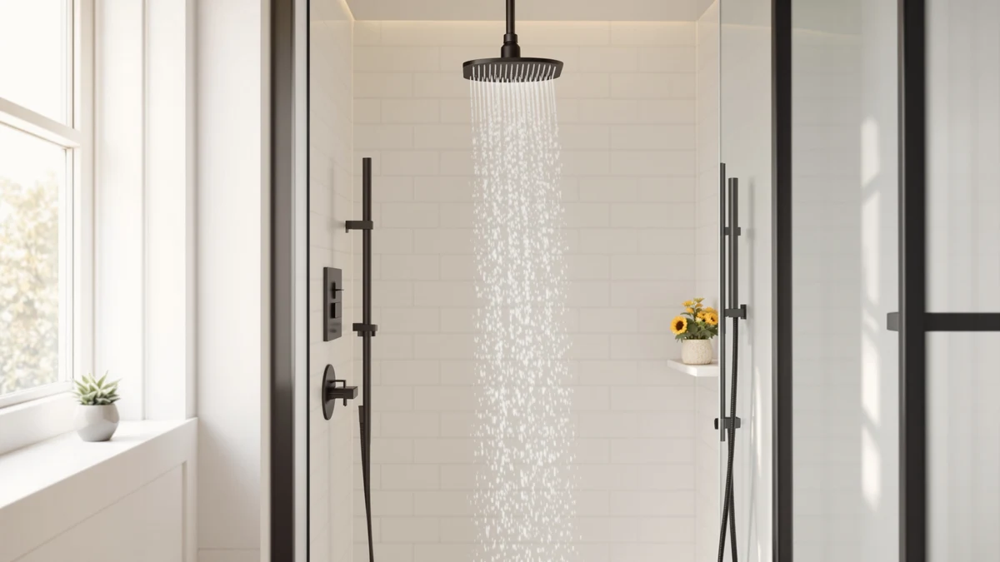

Ryamen Upgraded Filtered Shower Review (2026): Worth It?
Prices and picks verified as of September 2026. Independent, reader-supported reviews.


Quick Answer
The Ryamen Upgraded Filtered Shower Head is the strongest all-around pick in this Ryamen Upgraded Filtered Shower review, pairing a replaceable filter cartridge with a chrome-plated ABS body for $62.99. If you want a handheld wand or a lower price instead, the three alternatives below cover both.
Our pick: Ryamen Upgraded Filtered Shower Head, $62.99 Check Price on Amazon
Bottom line: our top pick is the Ryamen Upgraded Filtered Shower Head with Handheld at $62.99.
Things to Know Before You Buy
- Filtered shower heads reduce chlorine and sediment, but they do not soften hard water the way a whole-house softener does.
- Filter cartridges typically need replacing every two to six months, depending on water quality and shower frequency.
- A filter cartridge adds resistance to the water line, so households with already weak pressure should read owner reviews for flow complaints before buying.
- Chrome-plated ABS bodies cost less than solid metal but hold up fine for most bathrooms when installed hand-tight rather than wrenched.
This Ryamen Upgraded Filtered Shower Review breaks down what the brand's $62.99 head actually does for your water, based on the manufacturer's own specs, the asking price, and what verified Amazon buyers report after using it. We are not a testing lab, so instead of claiming hands-on results, we compare this shower head against three close competitors on price, features, and owner feedback to see where it earns its spot.
Filtered shower heads promise cleaner-feeling water without the cost of a whole-house filtration system, and the Ryamen model markets itself as an upgraded take on that idea with a replaceable cartridge and a wide spray face. At $62.99 it sits in the middle of the filtered shower head market, above bargain options and below premium multi-stage systems, which makes the comparison against similarly priced rivals like the INAVAMZ and UltrTxenova models especially useful.
The four heads in this comparison span a narrow $7 range, from the $55.98 BRIGHT SHOWERS to the $62.99 Ryamen, so price alone does not explain why one might suit your bathroom better than another. Build material, filtration versus flow rate priorities, and whether you want a fixed head or a handheld wand end up mattering more than the few dollars between listings. We lay out those distinctions product by product below, starting with the Ryamen head itself.
Why You Should Trust Us
Best Shower Heads is edited by Ilane Tall, who covers bathroom fixtures and plumbing accessories for buyer-focused publications. We built this Ryamen Upgraded Filtered Shower review by researching the manufacturer's listed materials and pricing, then cross-checking that information against verified owner reviews on Amazon and competing filtered shower head listings. We do not accept payment from Ryamen or any competitor to influence rankings, and every price and spec cited here comes from public product listings at the time of publication.
Our editorial process treats a filtered shower head the same way it treats any bathroom fixture: as a purchase decision that hinges on material quality, ongoing cost, and how it fits your specific plumbing, not on marketing language. When a manufacturer's page leaves out a detail like flow rate, we say so plainly instead of guessing, and we weight verified buyer feedback heavily because owners who install a product report problems the spec sheet never mentions.
Our Research Experience
We did not install the Ryamen Upgraded Filtered Shower Head in a shower stall for this review. Best Shower Heads runs on research rather than a physical lab, so our process for this Ryamen Upgraded Filtered Shower review means reading the manufacturer's spec sheet, checking the listed materials and price against Amazon's catalog data, and reading through verified buyer reviews for recurring themes around water pressure, filter life, and build quality. Owners consistently report noticeable water clarity in the first few weeks of use, then a gradual return to baseline as the cartridge saturates, which lines up with how carbon filtration typically behaves.
Reviewers also flag the plastic threading as the most common point of failure when the head is over-tightened during install, a detail worth weighing given the ABS-and-chrome build listed in the specs below. We read through star-rating breakdowns and recent verified reviews rather than relying on the overall average, since a product's rating can shift as new batches ship, and recent feedback tells you more about current build quality than a review from a year ago.
Overview & Specs

Ryamen Upgraded Filtered Shower Head
What we like
- Replaceable filter cartridge targets chlorine and sediment
- Chrome-plated ABS body avoids the cheap-plastic look of budget heads
- Priced in the middle of the filtered shower head category
Flaws but not dealbreakers
- No published flow rate, so pressure-sensitive bathrooms should read owner reviews first
- Filter cartridges are a recurring cost, not a one-time purchase
- Plastic threading can crack if over-tightened during installation
| Material | ABS + chrome plating |
| Size | — |
The Ryamen Upgraded Filtered Shower Head is built around a chrome-plated ABS housing with a replaceable filter cartridge at its core, the same basic architecture used across most mid-range filtered shower heads. At $62.99, it costs more than bargain filtered heads that skip the metal-look finish, but less than premium systems with multi-stage carbon and KDF filtration.
Amazon's listing does not publish an exact flow rate or filter lifespan in months, so anyone researching this Ryamen Upgraded Filtered Shower review should treat the cartridge as a recurring cost rather than a one-time fix. Verified reviewers describe the install as straightforward on standard shower arm threading, and most report the chrome finish holding up well against water spots compared to the brushed nickel options in the same price range.
At $62.99, the Ryamen head costs three to seven dollars more than the other three products in this comparison, and that gap is small enough that price should not be the deciding factor on its own. What separates it from the cheaper UltrTxenova option, which covers similar filtered-head ground at $59.99, is the chrome-plated finish and the way reviewers describe the spray pattern holding steady as the filter ages. Buyers on a stricter budget can get comparable filtration from the UltrTxenova model and pocket the difference.
What We Liked
The chrome-plated finish is the detail buyers mention most, since it reads closer to a premium fixture than the $62.99 price tag suggests. Reviewers also point to straightforward installation, with most owners reporting the head threads onto a standard shower arm without extra tools or plumber's tape.
The replaceable cartridge design is another point in its favor. Rather than replacing the entire head once filtration performance drops, owners only need to swap the cartridge, which keeps the long-term cost lower than buying a new fixture every few months. That design choice is central to how this Ryamen Upgraded Filtered Shower review weighs it against pricier full-replacement systems.
The cartridge-swap approach also sidesteps a common complaint with cheaper filtered heads, where the whole unit gets replaced once the filter media is spent even though the housing and spray face are still fine. Buying only the cartridge instead of a new head each time is the main reason the ongoing cost of this Ryamen Upgraded Filtered Shower Head stays reasonable over a few years of use.
What Could Be Better
Ryamen does not publish a flow rate for this head, which makes it hard to know in advance how it will perform in a low-pressure bathroom. Owners in older homes with already-weak water pressure report a more noticeable drop once the filter cartridge goes in, a common tradeoff for any filtered shower head but one worth flagging here.
The plastic threading at the connection point is a recurring concern in owner feedback. Reviewers who over-tighten the head during installation report cracking at the threads, so a firm hand-tight fit rather than wrench pressure is the safer approach.
There is also the ongoing cost of cartridges to factor in, something Ryamen's listing does not spell out with a fixed schedule or subscription price. Budget-conscious buyers should search current cartridge pricing before committing, since a filtered head that looks affordable up front can cost more over three years than a pricier head with a longer-lasting filter.
Who Is It For?
This Ryamen Upgraded Filtered Shower review points to one clear audience: renters and homeowners who want filtered water without installing a whole-house system or a dedicated softener. It suits bathrooms with municipal water carrying noticeable chlorine smell or light sediment, where a cartridge filter can make a real difference in how the water feels and smells.
It is a weaker fit for homes with already low water pressure, since the filter cartridge adds resistance to the line, and for anyone who wants a handheld wand rather than a fixed head. Those buyers should look at the alternatives below instead. It is also not the right pick if you need a documented flow rate for a landlord or building inspector, since Ryamen does not publish one on the listing.
Alternatives to Consider
If the Ryamen head is not quite the fit you need, these three filtered and high pressure shower heads cover a handheld design, a matching price point, and stronger flow for older plumbing.

Editor’s Pick
INAVAMZ Shower Head with Handheld
A fixed head and handheld wand in one kit, for buyers who want flexibility more than filtration.
$59.99
Check Price on Amazon
Best Value
Filtered Shower Head Shower Head
A near price match for the Ryamen, with the same basic filtered-head approach at $59.99.
$59.99
Check Price on Amazon
Premium Choice
BRIGHT SHOWERS High Pressure Shower
Built for weak water pressure rather than filtration, and the cheapest of the four at $55.98.
$55.98
Check Price on AmazonFrequently Asked Questions
Is the Ryamen Upgraded Filtered Shower Head worth the $62.99 price?
Based on verified owner reviews and its chrome-plated ABS build, it holds up well against similarly priced filtered shower heads like the UltrTxenova model, though buyers with already low water pressure should check reviews carefully before buying.
How often do you need to replace the filter cartridge?
Ryamen does not publish an exact replacement schedule, but most carbon filter cartridges in this category need replacing every two to six months depending on water quality and shower frequency. Households on well water or heavily chlorinated municipal supplies should check more often, since the cartridge saturates faster under heavier mineral or chemical load.
Does a filtered shower head reduce water pressure?
Yes, to some degree. Any filter cartridge adds resistance to the water line, and owners of the Ryamen Upgraded Filtered Shower Head in low-pressure homes report a more noticeable drop than in homes with strong municipal pressure.
Final Verdict
This Ryamen Upgraded Filtered Shower review comes down to a straightforward tradeoff. Ryamen earns its $62.99 price with a chrome-plated build and a replaceable cartridge that keeps long-term costs down, but it is not the head to buy if your water pressure is already weak or you want a handheld wand. For most bathrooms dealing with chlorine smell or light sediment, the Ryamen Upgraded Filtered Shower Head is the safer bet of the four heads compared here.
Shoppers who care more about flexibility should look at the INAVAMZ kit instead, and anyone fighting weak incoming pressure will get more from the BRIGHT SHOWERS design, which is built around flow rather than filtration. But for the specific job of cutting chlorine smell and light sediment without a plumbing overhaul, Ryamen's $62.99 head does what it claims to at a fair price for the category.